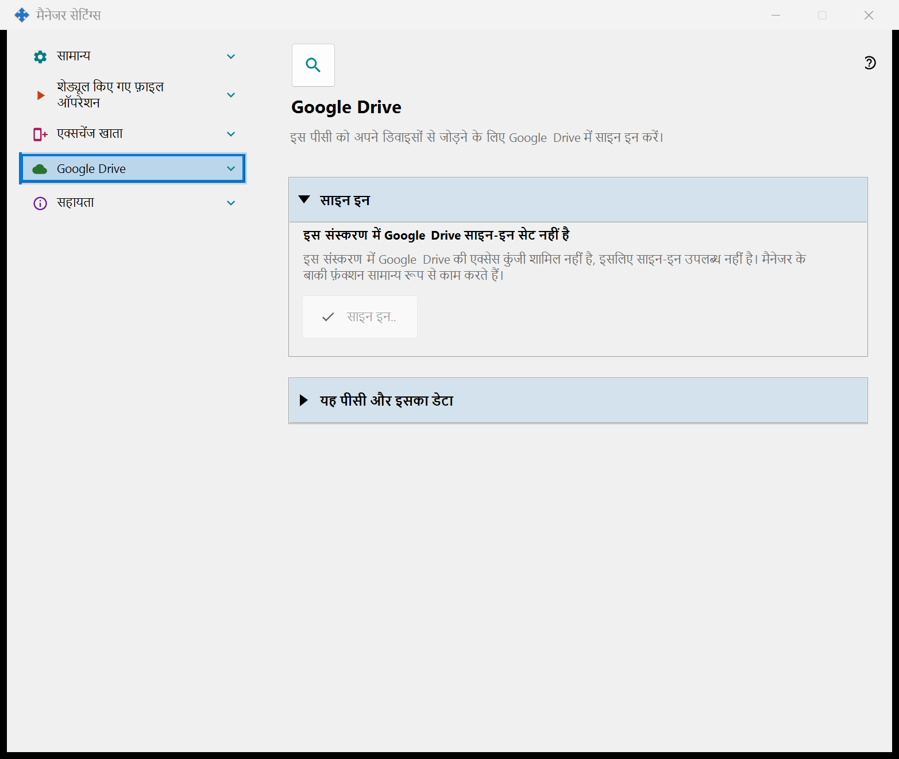
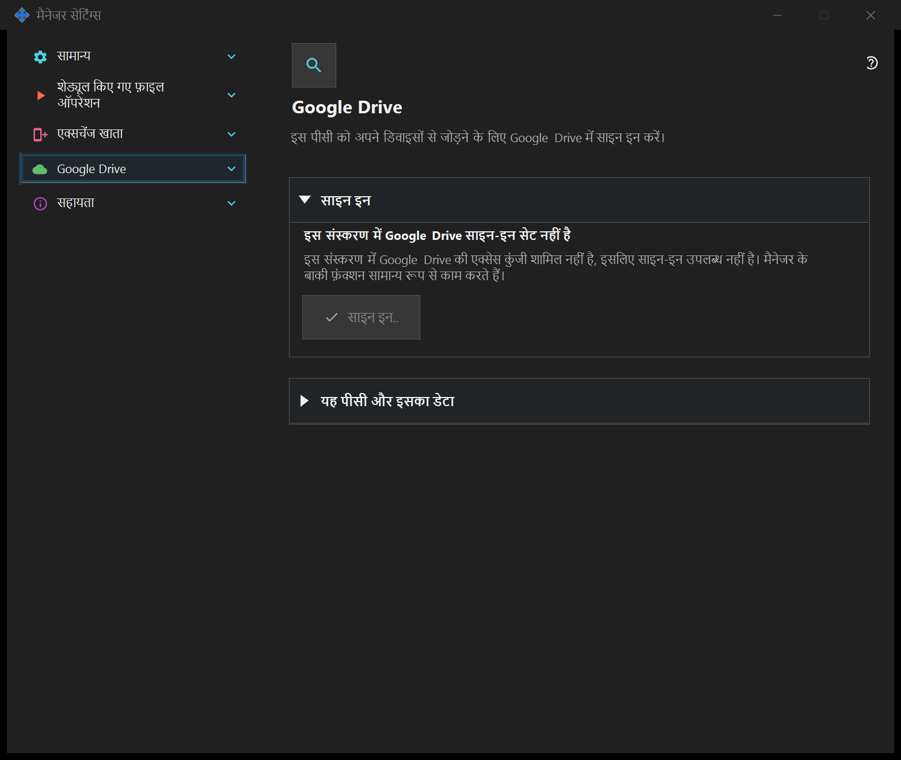

प्रबंधक सेटिंग
प्रबंधक सेटिंग
यह किस लिए है
स्टार्टअप, थीम, भाषा, दूरस्थ खाता, प्रकाशन, क्लिपबोर्ड और निर्धारित फ़ाइल कार्य प्रबंधक में हैं। स्थानीय सर्वर आवश्यक नहीं है। यदि SFTP साझाकरण घटक स्थापित है तो उसके पृष्ठ इस विंडो में एक समूह बनाते हैं।


इस क्रम में
ट्रे या घटक लिंक से खोलें। विंडो खोलने और बंद करने से सर्वर शुरू या बंद नहीं होता। दूरस्थ लॉगिन के लिए स्थानीय सर्वर आवश्यक नहीं है।
तत्व
प्रबंधक सेटिंग
स्टार्टअप, थीम, भाषा, दूरस्थ खाता, प्रकाशन, क्लिपबोर्ड और निर्धारित फ़ाइल कार्य प्रबंधक में हैं। स्थानीय सर्वर आवश्यक नहीं है। यदि SFTP साझाकरण घटक स्थापित है तो उसके पृष्ठ इस विंडो में एक समूह बनाते हैं। ट्रे या घटक लिंक से खोलें। विंडो खोलने और बंद करने से सर्वर शुरू या बंद नहीं होता। दूरस्थ लॉगिन के लिए स्थानीय सर्वर आवश्यक नहीं है।
प्रबंधक सेटिंग
स्टार्टअप, थीम, भाषा, दूरस्थ खाता, प्रकाशन, क्लिपबोर्ड और निर्धारित फ़ाइल कार्य प्रबंधक में हैं। स्थानीय सर्वर आवश्यक नहीं है। यदि SFTP साझाकरण घटक स्थापित है तो उसके पृष्ठ इस विंडो में एक समूह बनाते हैं। ट्रे या घटक लिंक से खोलें। विंडो खोलने और बंद करने से सर्वर शुरू या बंद नहीं होता। दूरस्थ लॉगिन के लिए स्थानीय सर्वर आवश्यक नहीं है।
Google Drive
यह पेज इस पीसी को आपके अपने Google खाते में साइन इन करता है, ताकि ऐप आपके Google Drive पर अपने निजी छिपे हुए फ़ोल्डर का उपयोग कर सके। «साइन इन..» दबाएँ: डिफ़ॉल्ट ब्राउज़र खुलता है, आप Google पर एक्सेस की अनुमति देते हैं, और Google उत्तर को स्थानीय पते के ज़रिए इस पीसी पर लौटा देता है; इसके बाद ब्राउज़र टैब बंद किया जा सकता है। माँगी जाने वाली एकमात्र अनुमति आपके Google Drive पर ऐप के अपने छिपे हुए फ़ोल्डर तक पहुँच है (स्कोप drive.appdata): ऐप आपके Google Drive की कोई अन्य फ़ाइल नहीं देख सकता और उसे न ईमेल पता मिलता है, न प्रोफ़ाइल का डेटा। यदि Google माँगे गए एक्सेस से अलग एक्सेस देता है, तो साइन-इन अस्वीकार कर दिया जाता है। गहरे अक्षरों वाली पंक्ति स्थिति दिखाती है। «Google Drive में साइन इन नहीं है»: «साइन इन..» उपलब्ध है; यदि एक्सेस रद्द हो गया या समाप्त हो गया है, तो नीचे की पंक्ति यह बताती है और फिर से साइन इन करने को कहती है। «ब्राउज़र में साइन-इन की प्रतीक्षा है..»: ब्राउज़र में साइन-इन पूरा करें या «रद्द करें» दबाएँ। «Google Drive में साइन इन हो गया है»: यह पीसी आपके Google Drive से जुड़ा है, और इसका नाम तथा संक्षिप्त पहचानकर्ता दिखाया जाता है। «Google Drive अभी उपलब्ध नहीं है»: नीचे की पंक्ति कारण बताती है - कनेक्शन नहीं है, दैनिक अपलोड सीमा पूरी हो गई है, आपके Google Drive में खाली जगह नहीं है, या Google से त्रुटि मिली है; कनेक्शन न होने पर और त्रुटि होने पर ऐप अपने आप दोबारा प्रयास करता है। साइन-आउट चलते समय «Google Drive से साइन-आउट हो रहा है..» दिखता है। «इस डिवाइस पर साइन-आउट करें» एक ही प्रश्न पूछता है, और डिफ़ॉल्ट उत्तर «नहीं» है। «हाँ» के बाद वह Google पर एक्सेस रद्द करता है, आपके Google Drive के छिपे हुए फ़ोल्डर से इस पीसी की प्रविष्टियाँ हटाता है और इस पीसी पर सहेजा गया साइन-इन टोकन हटा देता है; बटनों के नीचे की पंक्ति बताती है कि कितनी प्रविष्टियाँ हटाई गईं, या यह कि Google ने एक्सेस रद्द होने की पुष्टि नहीं की - तब आप उसे अपने Google खाते की सेटिंग में रद्द कर सकते हैं। Google की एक्सेस कुंजी के बिना बने संस्करण में पेज «इस संस्करण में Google Drive साइन-इन सेट नहीं है» दिखाता है, «साइन इन..» निष्क्रिय रहता है और मैनेजर के बाकी फ़ंक्शन सामान्य रूप से काम करते हैं।


प्रबंधक सेटिंग
स्टार्टअप, थीम, भाषा, दूरस्थ खाता, प्रकाशन, क्लिपबोर्ड और निर्धारित फ़ाइल कार्य प्रबंधक में हैं। स्थानीय सर्वर आवश्यक नहीं है। यदि SFTP साझाकरण घटक स्थापित है तो उसके पृष्ठ इस विंडो में एक समूह बनाते हैं। ट्रे या घटक लिंक से खोलें। विंडो खोलने और बंद करने से सर्वर शुरू या बंद नहीं होता। दूरस्थ लॉगिन के लिए स्थानीय सर्वर आवश्यक नहीं है।
प्रबंधक सेटिंग
स्टार्टअप, थीम, भाषा, दूरस्थ खाता, प्रकाशन, क्लिपबोर्ड और निर्धारित फ़ाइल कार्य प्रबंधक में हैं। स्थानीय सर्वर आवश्यक नहीं है। यदि SFTP साझाकरण घटक स्थापित है तो उसके पृष्ठ इस विंडो में एक समूह बनाते हैं। ट्रे या घटक लिंक से खोलें। विंडो खोलने और बंद करने से सर्वर शुरू या बंद नहीं होता। दूरस्थ लॉगिन के लिए स्थानीय सर्वर आवश्यक नहीं है।
प्रबंधक सेटिंग · SFTP साझाकरण सेटिंग · एक्सचेंज सर्वर सेटिंग